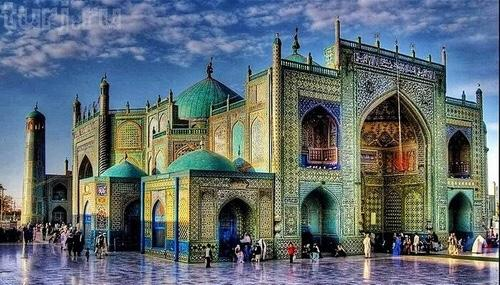
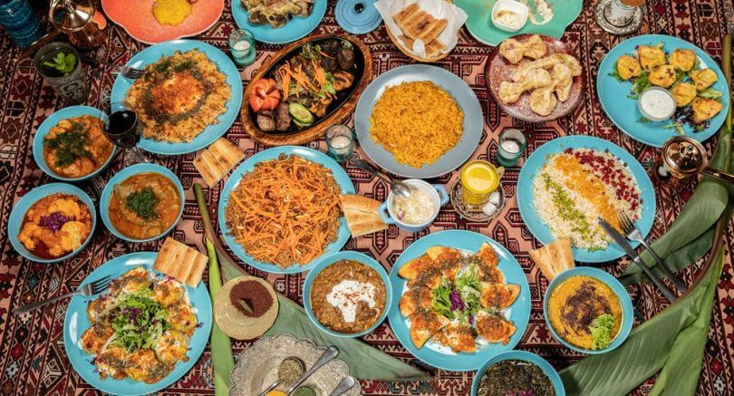
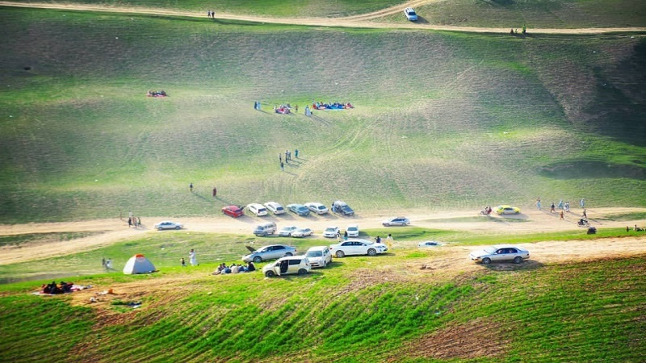

Top 3 activites you can do at Mazar-i-Sharif

Tour the historical mosque Rawza-i-Sharif
Rawza-i-Sharif is one of the historical mosques in Mazar-i-Sharif, and many people believe Hazrat Ali (rz) grave is in there.

Have a taste of the most delicious Afghani foods
People of Mazar-i-Sharif are known in their kind hospitablility along the country. They are very kind-hearted towards the guests.

Go to a picnic with friends to Dasht-e-Shadyan
Dasht-e-Shadyan is known at picnic place in spring season of the year. Many people go to picnic there whith their family and friends.